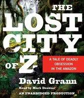
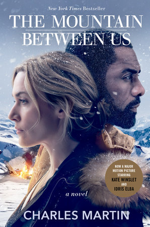
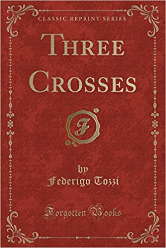
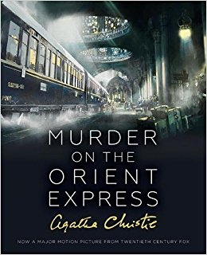
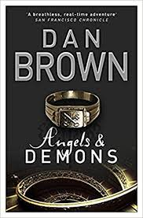
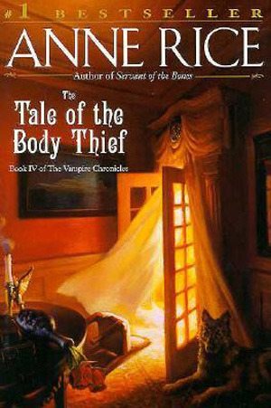

|
Clay Jensen returns home from school to find a mysterious box with his name on it lying on his porch. Inside he discovers cassette tapes recorded by Hannah Baker—his classmate and crush—who committed suicide two weeks earlier. On tape, Hannah explains that there are thirteen reasons why she decided to end her life.The first person to receive the tapes was Justin Foley. Hannah and Justin kissed in the park once, after she developed a crush on him. Despite this, Justin betrayed her by telling his friends that more had happened in the park than a kiss, earning Hannah the reputation of a slut at school.
-Jay Asher
|
|  |
The Lost City of Z: A Tale of Deadly Obsession in the Amazon is the debut non-fiction book by American author David Grann. The book was published in 2009, and recounts the activities of the British explorer Percy Fawcett who, in 1925, disappeared with his son in the Amazon while looking for an ancient lost city. For decades, explorers and scientists have tried to find evidence of his party, and of the "Lost City of Z".
-David Grann |
|  |
On a stormy winter night, Dr. Ben Payne and writer Ashley Knox are stuck in Salt Lake City airport when their flights home are canceled. Both of them are in hurry—Ben has patients to attend to, and Ashley is getting married the following day. Ben hires a charter plane and offers Ashley a seat, but when their pilot suffers a heart attack during flight, the plane crashes, leaving them stranded in the High Uintas Wilderness.
Though they survive the impact with injuries (Ben has broken ribs and Ashley suffers a terrible leg fracture), they are faced with harsh weather conditions and the fact that no one knows they are missing. The ordeal leads them to rely on each other to stay alive, and ultimately brings them closer.
-Charles Martin |
|  |
The latter gave a grunt, swore, pulled down the brim of his hat and closed his eyes again. He was squatting in a chair, with his hands in his trouser-pockets and his head leaning against one of the shelves of the bookcase; near by was an antique wooden chest, covered with vases, china plates and paintings, kept there on view for strangers.
Federigo Tozzi |
|  |
After taking the Taurus Express from Aleppo in Syria to Istanbul, private detective Hercule Poirot arrives at the Tokatlian Hotel. There he receives a telegram prompting him to return to London. He instructs the concierge to book a first-class compartment on the Simplon-Orient Express, leaving that night. Although the train is fully booked, Poirot obtains a second-class berth, but only with the intervention of a friend and fellow Belgian who is also boarding the train, M. Bouc, a director of the railroad, Compagnie Internationale des Wagons-Lits. Aboard the train, a malevolent, elderly American, Samuel Ratchett, attempts to hire Poirot because he believes his life is threatened, but Poirot refuses out of distaste for the man.
-Agatha Christie |
 |
When Charles Jacobs, a new minister, comes to town, young Jamie Morton is excited. Almost everyone in the tiny Maine hamlet comes to love Jacobs, his beautiful wife, and his young son. Things change all too suddenly when Mrs. Jacobs and her child die in a gruesome auto accident. Stricken with grief, the reverend denounces God and religion during a sermon, is banished from the town, and spends many years pursuing a career as a sideshow huckster before regaining his belief in God and becoming a prolific faith healer, fuelled by lifelong experiments with electricity. Jamie, meanwhile, grows up to become a musician and begins using heroin, which stops when he meets Jacobs again - Jacobs' unorthodox electrical treatment successfully cures him of his addiction.
-Stephen King |
|  |
CERN director Maximilian Kohler discovers one of the facility's physicists, Leonardo Vetra, murdered, his chest branded with an ambigram of the word "Illuminati". Kohler contacts Robert Langdon, an expert on the Illuminati, who determines that the ambigram is authentic. Kohler calls Vetra's adopted daughter Vittoria home and it is ascertained that the Illuminati — an ancient anti-religious organization thought extinct — have stolen a canister containing antimatter, a substance with destructive potential comparable to a nuclear weapon. When at CERN, the canister is stored in a unique electrical charger which ensures the antimatter's stability but when removed its back-up battery provides power for 24 hours after which the antimatter would fall out of suspension and, on coming into contact with the physical matter of the container, explode. The canister is located somewhere in Vatican City, with a security camera in front of it, as its digital clock counts down to an explosion due to occur at midnight, which will wipe out the Vatican.
-Dan Brown |
|
One morning, while trying to catch fish for breakfast, Dandelion and Geralt instead haul up an ancient, sealed amphora. Dandelion, in a fit of glee, and ignoring Geralt's explicit warnings, tries to opens the vase. During a struggle between the two the vase falls to the ground and a large cloud of red mist escapes—a genie (or djinn, more accurately). Geralt dives for cover, but Dandelion feels he knows exactly what is happening and held his ground, beginning to recite his list of three wishes. The genie does not fulfill even the first one of the bard's wishes (that his rival die of apoplexy), opting instead to strangle the bard.
-Andrzej Sapkowski |
|  |
The "coven" of vampires formed at the end of The Queen of the Damned has long since broken up, and Lestat has become extremely lonely. Among his only remaining friends is the mortal head of the Talamasca Caste, David Talbot, who is seventy-four years old. Although Lestat has repeatedly offered David the Dark Gift, David has always refused to become a vampire and keep Lestat company through eternity. Lonely and depressed, Lestat goes to the Gobi desert at dawn in a half-hearted suicide attempt. When he does not die, he goes to David's home in England to heal.
-Anne Rice |